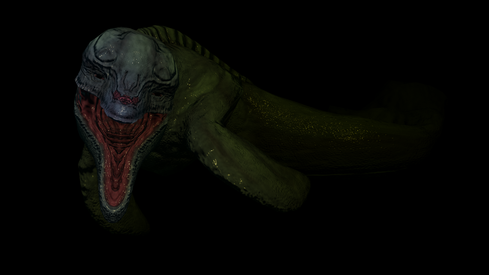
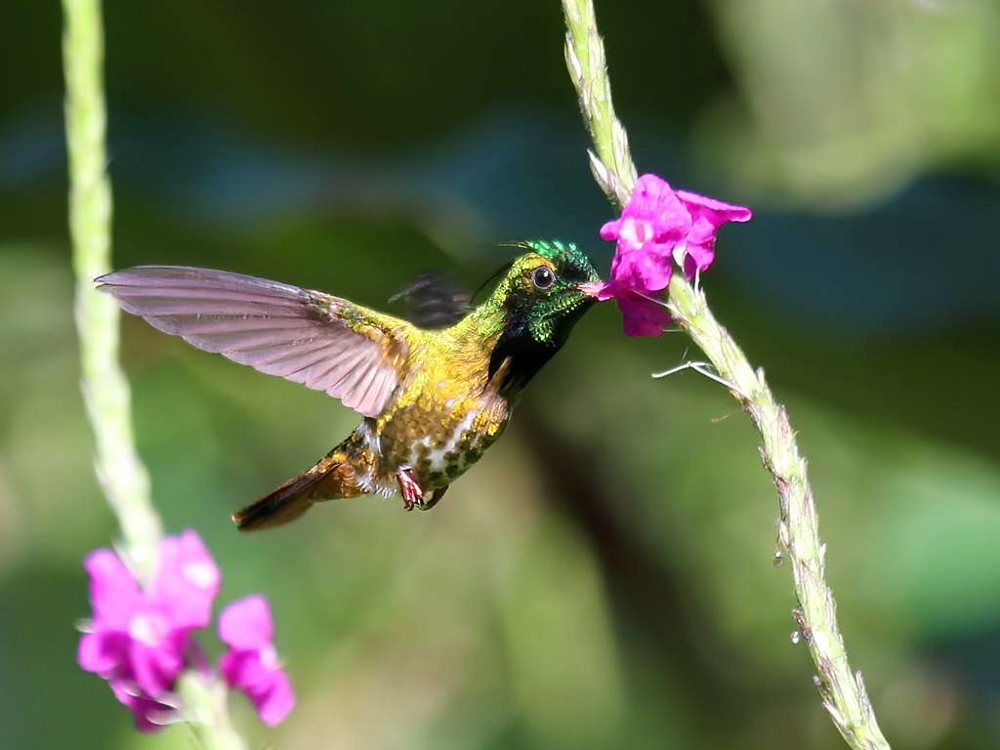
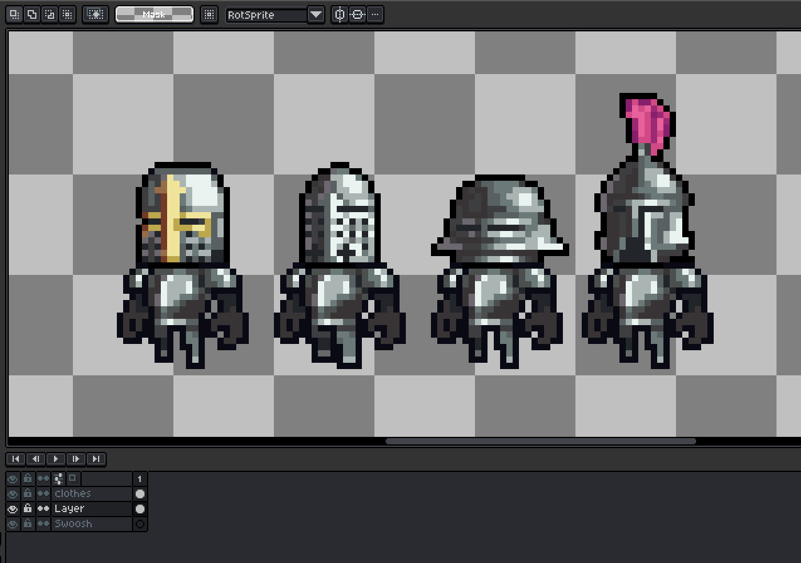
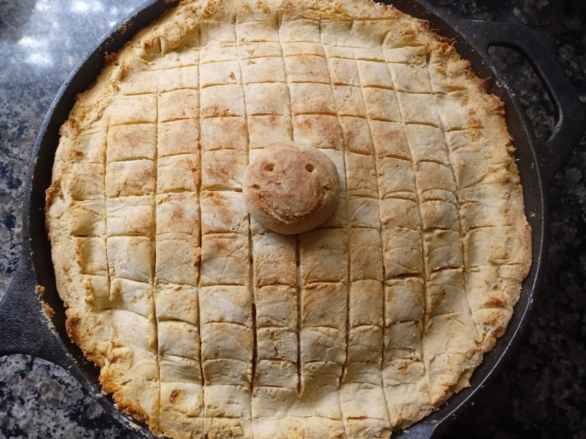

I was fond of sculpting at a young age. I remember shaping very basic lizard characters with my mom. We would color them with sparkle-ink pens and give them googly eyes. I even made my own creature chess set.
.jpeg)
During the pandemic, I had a lot of time to myself (maybe too much!). During lockdown I took an interest in 3D modeling.
It all started when I was playing Roblox and I asked this simple question: "How do they make these cool characters??"
That's how I found Blender. Such humble beginnings.

I was fond of sculpting at a young age. I remember shaping very basic lizard characters with my mom. We would color them with sparkle-ink pens and give them googly eyes. I even made my own creature chess set.
I love sketching animals and fantasy creatures! Ever since I was a kid, I always enjoyed sketching away on a piece of paper or a sketch book.

Ever since I was a little boy, my dad would take me out to the Costa Rican countryside to take photos of vibrantly colored birds, and insects of various colors and shapes. This was the earliest form of art I practiced. My father taught me everything I know about photography and is an avid photographer to this day.

I once worked with a small indie game company called Banana Yellow. During my time working with the team, I was the lead artist and a small-time programmer. I got lots of pixel art experience while working with them. I still love making pixel art and I want to someday make a game of my own.

Cooking was not something I ever expected myself to get into, but it came into my life as a necessity before I saw it as a hobby. As I started to become more health-conscious, I realized that the only way I could eat what I deemed to be healthy was to cook it myself. Fast forward to today and now it's another one of my favorite pastimes.
